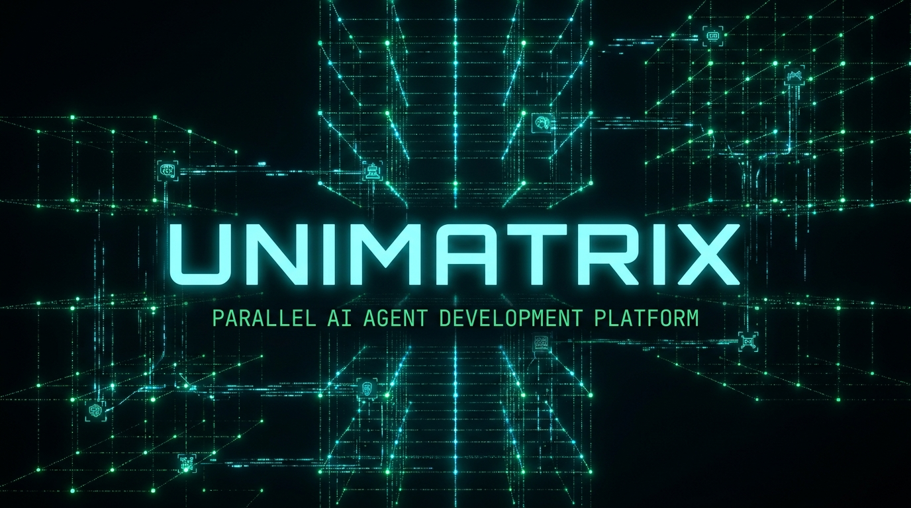

One question, four AI models,
zero MCP.
Fan one question out to Claude, Codex, Gemini and GLM, headless, over plain files. Then they grade each other.

A swarm you can read with cat
Your Claude Code session is the brain. It splits a question into independent branches, writes each one as a prompt file, and spawns headless worker CLIs to answer them. Workers coordinate over a JSONL file-bus on ext4: a branch is claimed by atomic rename, so there is no scheduler daemon, no lock server, no database. When every branch lands, a verify wave checks each answer with a different model than the one that wrote it.
Every state transition is a file move you can tail.
Five models, four roles
The recommended defaults; every seat is one line in swarm.conf, so any model can take any role. The four worker lanes run headless in an env-scrubbed cage: empty environment, scratch HOME, exactly one credential. Answers come from each CLI's own structured handoff file, never scraped from a terminal.
Fable 5
This very Claude Code session. Decomposes the question into independent branches, writes each as a prompt file, gates on completeness, and synthesizes at the end. Never spawned: the brain does not ride the bus.
plan + synthesizeCodex
GPT grades the other models' homework in the verify wave and sits as judge in loops. Structurally barred from grading its own output.
review + judgeGemini
The web-facing lane, read-only by design. Optionally runs inside a Docker container with no host mounts, so a prompt-injected web page lands in an empty box.
research, sandboxableOpus → GLM
Opus does the heavy lifting on your Claude subscription until the weekly limit trips; then the chain fails over to GLM, the same claude binary behind a child-only environment swap that keeps the orchestrator's keys out. Writes only under an explicit write grant; in loops that grant points at a scratch worktree, never your tree.
exec + write, auto-failoverAsk once, or iterate until true
/swarm
One round: plan, fan out, gate on completeness, cross-verify, synthesize. For research questions where you want four independent minds and a paper trail.
/swarm "Compare rq, Celery and Temporal for a 10-job/day pipeline. Recommend one." # or drive the bus directly, no slash command: echo "Your question here." > .bus/specs/b1.prompt ./swarm-run.sh cat .bus/res-b1.txt ./swarm-run.sh verify # judge != executor
/swarm-loop
Many rounds: write the success criteria once, then exec, oracle, review, repeat. Stops when the criteria genuinely hold, or loudly when they can't: plateau, oscillation, caps.
LOOP_GOAL="tests/foo.bats goes green" \
LOOP_ORACLE="bats tests/foo.bats" \
LOOP_JUDGE="codex:default" \
TARGET_DIR=~/code/myrepo \
./swarm-loop.sh init fix-foo
./swarm-loop.sh run fix-foo
# exec writes in a scratch worktree, the oracle
# decides, codex reviews, COMPLETE.md shows the diff
The rules that carry it
Answers come from handoff files, never the terminal
Every worker CLI writes a structured result file. Nothing is scraped from a pane, so delegation is immune to ANSI noise, injection through screen output, and the whole send-keys failure class.
The bus is files on ext4, moved by atomic rename
A losing claimer's rename fails with ENOENT, and that failure is the lost-race signal. Crash recovery is a lease reaper keyed on heartbeats. The whole scheduler is something you can inspect with ls.
A judge never grades its own work
The verify wave maps every answer to a different model than the one that produced it, enforced in code. Loops pin an independent judge lane. Self-certification is structurally impossible.
No silent spend
Every spawned run appends a line to a run-evidence ledger: when, what, which lane, what it actually billed. If it cost money, it left a receipt.
Why this shape
Hub-and-spoke, not peer-to-peer
Anthropic's own Agent Teams let subagents mailbox each other directly. Unimatrix workers never talk to each other — every exchange is a JSONL line Fable and Codex can read, grep, replay. Auditability and judge-independence are the payoff.
Judge ≠ executor, cross-vendor, no exceptions
LLM judges measurably over-reward their own model family — 67-82% bias in published evals. Most orchestrators let the doer grade itself; unimatrix forbids it structurally. Honest residue: Fable (Claude) still synthesizes over the claude:opus leg — a known, documented limitation.
Four lanes is a ceiling, not a shortage
Heterogeneity keeps paying; homogeneous headcount saturates — 2-5 concurrent agents is the validated ceiling everywhere it's been measured. We will never add a 5th lane that's just another claude -p.
Handoff-file discipline, independently confirmed
Anthropic's own production research system routes subagent artifacts through external storage and returns only summaries to the lead. That's exactly unimatrix's res-*.txt convention.
Zero theater
The most-starred competitor in this space was audited at roughly 97% stub tools. Every unimatrix queue → claimed → done transition is a real backend action: 160 real bats tests, every cost claim reproducible from the ledger.
Zero infrastructure, disposable monitor
No MCP, no daemon in the critical path, no database. tmux is the durable parent; the web cockpit can die and restart without touching a running worker.
Cost is first-class, not an afterthought
Every spawned run must land a line in docs/ops/llm-runs.md — no spend without a ledger line. A hard boundary no competitor enforces.
Quickstart
1Prerequisites
bash 5.1+, jq, tmux. The worker CLIs you want lanes for: claude, codex, gemini. GLM rides on the claude binary.
claude --version # 2.1.204+, claude login codex --version # 0.143+, codex login --with-api-key gemini --version # 0.49+, GEMINI_API_KEY
2Clone and run
The bus lives at .bus/ on ext4. No install step, no build, no config server. Missing lanes just don't activate.
git clone https://github.com/eletrixa/unimatrix cd unimatrix mkdir -p .bus/specs echo "Tradeoffs of X vs Y, 5 bullets." > .bus/specs/b1.prompt ./swarm-run.sh && cat .bus/res-b1.txt
3Watch from the cockpit
A tmux session on its own socket: board, firehose, cost, plus one control pane for steering. Attach read-only from anywhere, including WezTerm on Windows. Nothing outside the control pane ever writes to the bus.
./swarm-mon.sh tmux -L swarm attach -r -t mon # -r = read-only ./swarm-mon.sh --wezterm # from Windows
4Steer a live run
Pause, add branches, cancel one, or abort the whole process group. Control verbs are file operations too.
src/swarm-ctl pause # stop new claims, keep in-flight echo "Also check licensing." > .bus/specs/extra.prompt src/swarm-ctl add .bus/specs/extra.prompt src/swarm-ctl status src/swarm-ctl abort # kill the whole run, one pgid
Don't want to touch a terminal? → the guide. Driving this from an agent? → agents.md.
Honest status
Built spec-first and test-first in one day of orchestrated swarm work: Fable planned and reviewed, cheaper agents wrote code, and every green test suite was re-verified against the real APIs. The live smokes kept catching bugs the fakes couldn't.
Shipped and live-verified
All four lanes against real APIs. Cross-model verify wave. Loop convergence: a failing oracle driven to green by a write-capable worker in a scratch worktree. Rate-limit failover. Kill-a-worker recovery. Optional Docker sandbox for the gemini lane.
Known edges
Attended runs by default: unattended requires the sandboxed gemini lane and an explicit go. Gemini is read-only in v1. Codex and Gemini bill outside their envelopes, so the ledger records tokens for those lanes, not dollars.